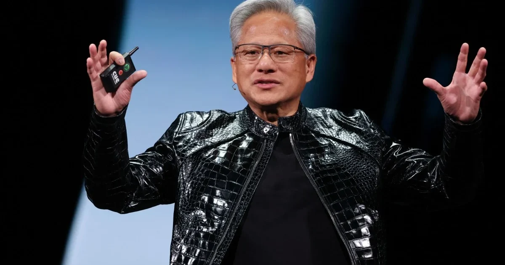

Security & Crime · 24 Nov 2026
VIDEO: ‘I’ll be a better CEO,’ reinstated Nvidia boss tells cheering staff

Jensen Huang, reinstated as Nvidia CEO after an 11-day absence, told cheering staff he will be a better CEO and apologised for his mistakes. Read More: https://punchng.com/video-ill-be-a-better-ceo-reinstated-nvidia-boss-tells-cheering-staff/
Multiple independent publishers are reporting on the same development: VIDEO: ‘I’ll be a better CEO,’ reinstated Nvidia boss tells cheering staff.
The available reports place the development in the Security & Crime category. The accounts were compared for agreement on the central event rather than simply shared names or broad topics.
One of the available reports describes the development this way: Jensen Huang, reinstated as Nvidia CEO after an 11-day absence, told cheering staff he will be a better CEO and apologised for his mistakes. Read More: https://punchng.com/video-ill-be-a-better-ceo-reinstated-nvidia-boss-tells-cheering-staff/
Readers should consult the linked source reports for additional context, updates and details that may change as the story develops.
Sources
This article was produced by the C. O. Eric AI Newsroom from the cited sources. It is published only after automated evidence and safety checks.